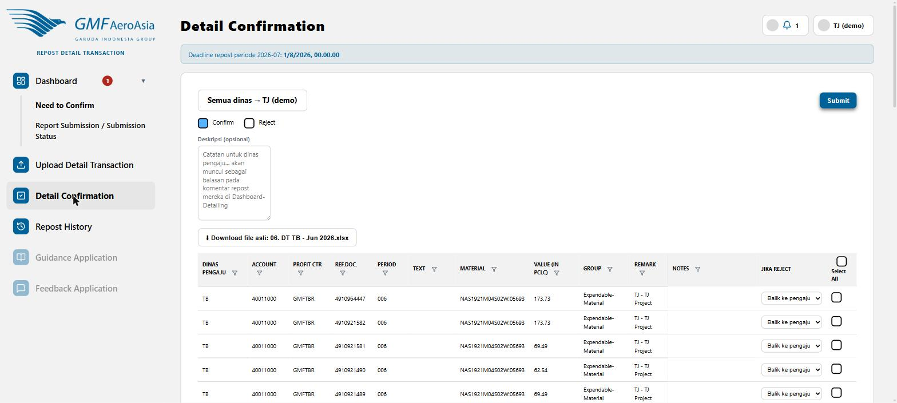

Antrian konfirmasi per pasangan dinas
rdt/confirm

- Pilih dinas pengaju di dropdown atas (atau "Semua dinas") untuk menyaring antrian.
- Untuk tiap baris, centang Confirm (setuju) atau Reject (tolak).
- Kalau memilih Reject, dropdown "Jika Reject" di kolom paling kanan menentukan apa yang terjadi: "Balik ke pengajuan" (tanpa pengalihan — dinas pengaju harus menindaklanjuti sendiri) atau langsung dialihkan ke dinas lain yang Anda pilih (transaksi langsung pindah, tidak perlu tahap tolak-dulu).
- Isi Deskripsi (opsional) — teks ini otomatis menjadi komentar balasan di diskusi pasangan dinas terkait, dan mengirim notifikasi ke pihak terkait.
- Tombol Download file asli menyediakan file Excel sumber transaksi ini untuk verifikasi silang.
- Centang baris yang diinginkan (atau Select All), lalu klik Submit.
Semua-atau-tidak-sama-sekali: Submit memproses seluruh baris tercentang sebagai satu paket. Kalau ada satu saja yang gagal (misalnya sudah diproses pihak lain lebih dulu), tidak ada satu pun perubahan yang tersimpan — Anda perlu submit ulang.